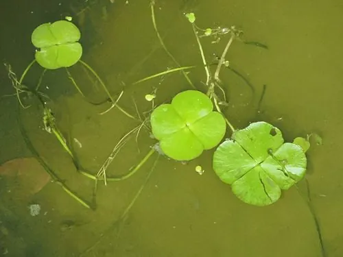

水生植物 · 植物界
田字草 Marsilea quadrifolia

苹科水生蕨类，四片小叶排成田字形，夜晚小叶会闭合，生于水田和浅水处，是常见的水生观赏与药用蕨类。
- 分类
- 门蕨类植物门纲水龙骨纲目槐叶苹目科苹科属苹属
- 栖息环境
- 水田、池塘、沟渠的浅水区，喜温暖、阳光充足
- 地理分布
- 广布欧亚温带地区，中国各地水田与池塘常见
- 保护级别
- 暂无评估
物种志
田字草为苹科苹属水生蕨类植物，株高 5–15 厘米，具细长的匍匐根状茎，横生于水底泥中。叶片由四片倒三角形小叶组成，呈田字形排列，叶柄细长，浮于水面或挺出水面。孢子果生于叶柄基部，椭圆形，夏秋成熟；它是蕨类植物，不开花结果。
田字草广布于欧洲和亚洲的温带地区，中国各地水田、池塘和沟渠常见，喜温暖、阳光充足和浅水环境，靠根状茎蔓延，繁殖很快。它四片小叶在夜间会向上闭合，白天再展开，属于植物的睡眠运动。田字草叶片小巧、形态别致，可用于水族箱和水景布置；全草可入药，有清热解毒之效，但在稻田中大量生长时也被视为杂草，需要人工清除。
形态与习性
- 株高5–15 厘米，叶柄细长
- 孢子期夏秋，孢子果生于叶柄基部
- 光照喜充足阳光，也耐半阴
- 水分浅水或湿润泥面，水深 5–20 厘米
- 土壤水田淤泥或塘泥
- 繁殖根状茎分株繁殖
- 主要用途水景布置、水族箱、全草入药
趣味知识
- 田字草的四片小叶排成田字形，夜晚会向上闭合，白天再展开。
- 它属于蕨类植物，不开花结果，靠孢子繁殖。
- 田字草的孢子果生于叶柄基部，成熟后散出孢子。
- 在水稻田中它常被视为杂草，但也可作水景植物和药材。